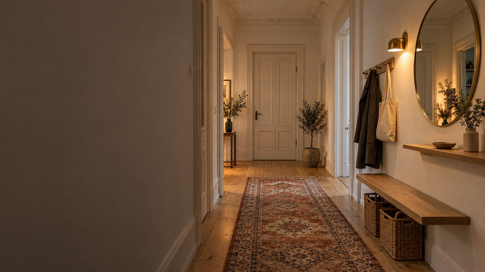
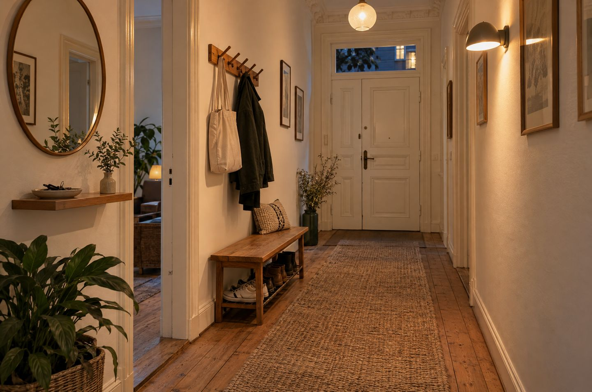

Flur und Eingang einrichten
Der Flur ist das Erste, was du siehst, wenn du heimkommst. Mit den richtigen Maßen wird er aufgeräumt, hell und freundlich, auch wenn er schmal ist.
Im Flur sollten etwa 90 cm Durchgang frei bleiben, alles darüber kann Möbeltiefe werden. Garderobenhaken hängen für Erwachsene auf 170 bis 190 cm, für Kinder auf 100 bis 150 cm. Fürs Grundlicht reichen 100 bis 150 Lumen pro Quadratmeter in Warmweiß.
Die wichtigsten Maße.
Damit du mit Jacke und Tasche bequem durchkommst.
Der Flur-Check.
Miss deinen Flur an der schmalsten Stelle. Wir sagen dir, wie tief deine Möbel sein dürfen.
Die genaue Läufer-Länge mit Platz für die Türen rechnet der Läufer-Rechner. Wie viele Lampen das sind, zeigt der Lumen-Rechner. Ob neben der Garderobe noch 90 cm frei bleiben, prüft der Raumplaner.

In sechs Schritten zum schönen Flur.
Ausmisten
Im Flur bleibt nur, was du täglich brauchst: die Jacken und Schuhe der Saison. Alles andere wandert in Schrank, Keller oder Kiste.
Haken großzügig planen
Lieber mehr Haken als zu wenig. Zwei Reihen übereinander helfen: oben für Jacken, unten für Kinder und Taschen.
Schuhe verstauen
Ein Schuhkipper ist oft nur 16 bis 18 cm tief und passt auch in schmale Flure. Er muss an der Wand befestigt werden, damit er nicht kippt.
Ein Platz zum Sitzen
Eine schmale Bank oder ein Hocker zum Schuhe anziehen. Eine Bank mit Fach darunter ist gleich noch Stauraum.
Ablage und Spiegel
Eine schmale Konsole oder ein Wandbrett mit Schale für Schlüssel. Darüber ein großer Spiegel, der Licht zurückwirft und den Flur weiter wirken lässt.
Licht aus mehreren Quellen
Deckenlicht als Grundlicht, dazu eine Wandleuchte oder kleine Tischleuchte. Warmweiß mit 2.700 bis 3.000 K wirkt einladend. Ein Bewegungsmelder hilft nachts.
Tricks für schmale Flure.
- Hell streichen: Weiß, Creme oder helles Greige öffnen den Raum. Streiche Türen und Zargen in der Wandfarbe, dann fallen sie weniger auf. Mehr dazu unter Wandfarbe wählen.
- Schwebende Möbel: Wandmontierte Möbel lassen den Boden frei. Das wirkt leichter und erleichtert das Putzen.
- Die Länge nutzen: Ein langer Läufer, eine Bilderreihe oder ein langes Wandbrett führen den Blick und machen einen Schlauch zur Galerie.
- Nicht nur eine Deckenlampe: Eine einzelne Lampe in der Mitte lässt die Wände näher rücken. Mehrere Lichtquellen machen den Flur breiter.
- Geschlossener Stauraum: Offene Regale sehen schnell unordentlich aus. Körbe und Boxen schaffen Ruhe. Weitere Ideen stehen unter Kleine Räume größer wirken lassen.
Häufige Fehler.
- Zu tiefe Möbel: Ein Garderobenschrank mit Kleiderstange ist meist 55 cm oder tiefer. Im schmalen Flur sind Modelle mit höchstens 35 cm besser.
- Rutschender Läufer: Ohne Antirutschmatte wird der Läufer zur Stolperfalle. Robust und waschbar sollte er auch sein.
- Kein Sitzplatz: Wer im Stehen Schuhe anzieht, stützt sich an der Wand ab. Ein Hocker reicht schon.
- Zu dunkle Wände ohne Licht: Dunkle Farben gehen, aber nur als Akzent und mit genug Licht.
In der Mietwohnung darfst du Haken und Garderobe in üblichem Umfang andübeln. Was ohne Bohren geht, steht unter Schöner wohnen zur Miete.
Checkliste.
Hak ab, was erledigt ist. Der Stand bleibt nur in deinem Browser.
Für Flur und Eingang.
Ideen zum Stöbern. Die Links führen zu einer Suche bei AmazonAnzeige
Häufige Fragen.
Wie breit muss der Durchgang im Flur sein?
Etwa 90 cm sollten frei bleiben. Was der Flur breiter ist, kannst du für Möbel nutzen.
In welcher Höhe hängt man Garderobenhaken auf?
Für Erwachsene auf 170 bis 190 cm, für Kinder je nach Alter auf 100 bis 150 cm. Prüfe vorher, ob lange Mäntel genug Platz nach unten haben.
Wie tief ist ein Schuhschrank für schmale Flure?
Schuhkipper gibt es ab etwa 16 bis 18 cm Tiefe. Die Schuhe stehen darin schräg. Befestige ihn immer an der Wand.
Wie groß muss ein Spiegel sein, damit ich mich ganz sehe?
Ein flacher Spiegel muss etwa halb so hoch sein wie du, also rund 85 bis 95 cm bei 1,70 bis 1,90 m. Die Oberkante hängt dann etwa auf Höhe deines Scheitels.
Wie hell sollte das Licht im Flur sein?
Fürs Grundlicht etwa 100 bis 150 Lumen pro Quadratmeter. Ein 6 m² großer Flur braucht also 600 bis 900 Lumen, verteilt auf mehrere Leuchten.
Quellen.
Alle 6 Quellen anzeigen
- Baur Magazin: Garderobe befestigen, Höhe der Haken baur.de
- Baur Magazin: Garderoben für den kleinen Flur, Durchgang und Tiefen baur.de
- desired: Warum dein Flur kleiner wirkt, als er ist (07.04.2026) desired.de
- toom: Flurbeleuchtung, Ideen und Lumen pro Quadratmeter toom.de
- wohnglück: Flur einrichten und gestalten, Tipps wohnglueck.de
- Baur: Schuhkipper für schmale Flure, Tiefe 17 cm (Herstellerangabe) baur.de
Geprüft am 10.11.2026.